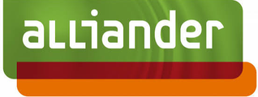
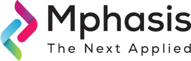

Voor duurzame scale-ups en energiebedrijven die kritieke transities moeten navigeren. Of dat nu het opbouwen van moderne data-, analytics- en AI-capaciteiten is, het leiden van data-teams tijdens groei of leiderschapswissels, of het vertalen van data naar strategische keuzes. Het doel is altijd hetzelfde: betere beslissingen, sneller.
10+ jaar ervaring in data & analytics leadership. Als (interim) manager, fractional lead en hands-on consultant. Achtergrond in System Dynamics (MSc, Cum Laude) & Business Analytics (MSc, Cum Laude). Gedreven door het versnellen van de energietransitie en bredere duurzaamheidsuitdagingen.
Eerder aan de slag bij o.a.


Data en inzichten zijn tools, geen einddoel. Het einddoel is impact: organisaties helpen groeien zonder hun missie te verliezen, schalen zonder chaos te creëren, en beslissingen nemen die over de tijd cumuleren. Dit zijn de vijf pijlers waar ik mee werk:
Visie, roadmaps, data domains, eigenaarschap, data quality
Je hebt data, maar geen heldere visie. Elke afdeling doet z'n ding, er is geen eigenaarschap, geen prioriteiten. Management weet niet waar data aan bijdraagt.
Wat ik doe: Ik ontwikkel datastrategie, governance frameworks en roadmaps die aansluiten bij business-doelen. Naast begrippenkaders en data quality KPI's betekent dat: data domains, duidelijke eigenaren en een werkbaar stewardship model dat past bij een scale-up, niet bij een bank. Ik haal ook het executive sponsorship en de bijbehorende investering binnen die de strategie voorbij kwartaal 1 in leven houden, in plaats van een deck dat landt en stilvalt.
Wat je krijgt: Een heldere strategie voor de komende 1-3 jaar, met mandaat en funding eronder. Teams weten wat van hen verwacht wordt. Betrouwbare stuurinformatie voor directie.
Interim leiderschap, hiring, coaching, operating model, federated werken
Je hebt een data-team, maar ze komen niet uit ad-hoc werk. Je kunt niet schalen en overweegt je eerste Head of Data aan te nemen. Of je data-lead valt (tijdelijk) weg en je wilt geen momentum verliezen.
Wat ik doe: Ik bouw en leid multidisciplinaire data-teams: hiring, onboarding, skill development en delivery-routines. Ik ontwerp het operating model zo dat het meeschaalt: centraal wat moet, decentraal wat kan, een federated (hub-and-spoke) model met heldere decision rights en accountability tussen business, IT en risk. Ik heb teams van 5 tot 12 FTE geleid en mensen gecoacht van junior tot lead, en help je eerste permanente Head of Data succesvol te laten zijn. Ook beschikbaar als fractional Head of Data / CDO (2-3 dagen per week).
Wat je krijgt: Een team dat zelfstandig kan draaien, met een operating model dat je volgende groeifase overleeft. Geen afhankelijkheid van externe consultants. Management dat de datafunctie vertrouwt.
Decision intelligence: forecasting, scenario-analyse, pricing, KPI-frameworks, self-service BI
Je staat voor een kritieke strategische transitie (nieuwe markt, product pivot, propositie-ontwikkeling, ERP migratie) maar mist de inzichten én de lead om die beslissingen te dragen.
Wat ik doe: Als interim strategie-lead met een data-achtergrond vertaal ik open vragen naar decision-ready antwoorden. Altijd datagedreven: eerst de analyse (pricing, segmentatie, unit economics, forecasts, scenario-analyses), dan de opties. Ik zet KPI-frameworks en self-service BI neer zodat de organisatie zelf op de cijfers kan sturen, en ik leid cross-functionele teams van business case tot implementatie-roadmap.
Wat je krijgt: Een strategische beslissing met heldere trade-offs, een meetbare business case en een implementeerbare roadmap. KPI-frameworks en dashboards die de business ook echt gebruikt. Een team dat autonoom door kan na mijn vertrek. Voorbeelden: propositie-ontwikkeling tijdens marktshift (energie), pricing & segmentatie, team-transformatie.
Modern data stack, migraties, tooling, integraties
Je legacy systemen worden vervangen, of je fuseert meerdere datasources. Migraties falen vaak omdat techniek en organisatie los van elkaar worden aangepakt.
Wat ik doe: Ik ontwerp enterprise datamodellen en begeleid de volledige migratie: van gap-analyse en directiepresentaties tot hands-on SQL migratiescripts en teambegeleiding. Als freelance Head of Data & Insights stuur ik ook build vs buy en de kostenefficiëntie van het platform aan, tooling (Snowflake, Power BI, SAP) en vendor selection. Ik werk goed met stakeholders op alle niveaus, van architecten tot eindgebruikers.
Wat je krijgt: Migraties die op tijd opleveren én gedragen worden. Data quality frameworks die fouten significant reduceren. Teams die het nieuwe systeem écht snappen en gebruiken. Schaalbare infrastructuur.
Human + AI manier van werken, use-case portfolio, benefits tracking, responsible by default
Iedereen experimenteert met AI, maar niemand kan je vertellen welke use cases echt iets opleveren, of hoe het werk zelf verandert. Pilots stapelen zich op; productie blijft leeg. De bottleneck is zelden het model. Het is adoptie.
Wat ik doe: Ik bouw een AI use-case portfolio, geprioriteerd op waarde en haalbaarheid, met staged funding, heldere go/no-go gates en benefits tracking tegen de oorspronkelijke business case. En ik coach teams naar een hybride human + AI manier van werken: nieuwe routines, nieuwe rollen, een nieuwe taakverdeling tussen mensen en agents, met adoptie als de metric die telt. Kaders (EU AI Act, GDPR, model risk) zitten er als lichtgewicht randvoorwaarde in, niet als compliance-project.
Wat je krijgt: Een gefinancierd portfolio in plaats van losse pilots, met gerealiseerde waarde die tegen de business case wordt bijgehouden. Teams die daadwerkelijk naast AI werken in hun dagelijkse routines, gemeten op adoptie in plaats van op aantal licenties.
Concrete voorbeelden: Energiehandel en forecasting (Vandebron), klantbeheer bij utilities (Alliander), ESG reporting en carbon accounting (ING, CCV), B2B SaaS analytics (Traxl).
SQL (expert), Python (gevorderd), Snowflake, GCP/BigQuery, Azure, Power BI (DAX), Looker, dbt, Dagster, Airbyte, scikit-learn & Prophet (forecasting), Docker/K8s, CI/CD, Kraken, SAP S/4HANA & SAP C4C, Salesforce, Git
Vandebron (200+ FTE) stond voor fundamentele marktshift: afschaffing salderingsregeling in 2027. Zonder nieuwe flexibele klantcontracten risico op multi-miljoen aan gederfde toekomstige inkomsten. Initiële opdracht: nieuwe energie-proposities ontwerpen. Na succes verlengd voor volledige team-transformatie en bredere strategie-uitvoering, parallel aan organisatiebrede ERP-migratie (Kraken).
Als interim Head of Strategy leid ik het consumer strategy team (business insights, pricing & program management). Het is een sterk analytics-gedreven rol: inzichten bepalen de strategie. Ik lever strategische beslissingen én organisatie-verandering:
Op directieniveau goedgekeurde business case die €10M+ aan waarde ontsluit, met een implementatie-roadmap voor de nieuwe flexibele proposities (2027 launch). Decision adoption en milestone hit-rate sturen nu het team, dat autonoom opereert met nieuwe rollen en een nieuw samenwerkingsmodel.
Alliander, grote Nederlandse netwerkbeheerder, had 15+ legacy systemen zonder centrale definitie van kernconcepten (klant, aansluiting, asset). Directie wilde migreren naar SAP CX en moderne data-architectuur, maar niemand wist waar te beginnen. Klantdata bevatte dubbele records en inconsistenties die operationele processen blokkeerden.
Als Data Consultant / Architect leidde ik de datafundament-workstream:
Heldere migratiestrategie breed gedragen. Management kreeg voor het eerst betrouwbare stuurinformatie over asset management en netinvesteringen.
CCV, Europese betaalprovider, wilde de commerciële sturing professionaliseren. Rapportages waren versnipperd over Sales, Marketing en Finance: elk team had eigen cijfers, definities verschilden per dashboard, en digital marketing spend was lastig te verantwoorden. Management miste een consistent beeld van commerciële performance en klantwaarde.
Als freelance Data Analytics Lead bij CCV bouwde ik het commerciële analytics-fundament, en werd ik in 2025 teruggevraagd om een groepsbreed KPI-framework op te zetten:
Vernieuwde dashboards en visualisaties van verkoop-, product- en marktinzichten, in meerdere gevallen aanleiding voor concrete procesveranderingen.
Snippets uit LinkedIn-aanbevelingen van opdrachtgevers en collega's. Lees ze volledig op LinkedIn.
"Tom is a natural leader with a great talent for technology and data. He was instrumental in delivering the successful transformation of our Data Analytics team from ad-hoc reporting towards a Center-of-Excellence model. Tom is able to transmit ambition and drive not just to a team, but to a whole company!"
"Als kartrekker van Master Data Governance zorgde Tom voor richting, voortgang en kwaliteit, en wist hij complexe vraagstukken om te zetten in praktische oplossingen. Een professional die niet alleen resultaten levert, maar ook energie en vertrouwen brengt in elk project!"
"Als objectieve sparringpartner met senioriteit op zowel inhoud als stakeholdermanagement is menig dashboard en visualisatie van verkoop-, product- of marktinzichten vernieuwd. In meerdere gevallen heeft dat geleid tot inzichten waar concrete procesveranderingen door ingezet zijn."
"Tom took a proactive approach in building the data framework for our annual ESG reporting from scratch, and professionalized our data collection process. I learnt a lot about good data management working with Tom, a true data master. Would recommend Tom any day of the week!"
Mijn werk zit op het snijvlak van data, strategie en impact: ik help organisaties kritieke transities navigeren, met als doel altijd hetzelfde: betere beslissingen, sneller.
Ik ben gemotiveerd door het versnellen van de energietransitie en bredere duurzaamheidsuitdagingen. Daarom werk ik primair met energiebedrijven, climate tech scale-ups en impact-gedreven organisaties. Het is ook waarom ik via Carbon Equity investeer in doorbraak-technologieën voor klimaatoplossingen.
Ik heb 10+ jaar ervaring in data & analytics leadership: multidisciplinaire teams bouwen en leiden (analytics, engineering, data science), mensen coachen van junior tot lead, en datastrategie afstemmen met executive en board-level stakeholders. De business begrijpen is altijd mijn startpunt, geworteld in mijn MSc Business Analytics (Cum Laude). Mijn MSc System Dynamics (Cum Laude) leerde me de patronen, feedback loops en onbedoelde consequenties te zien die anderen missen. Die bril neem ik mee in elke opdracht: begrijp het systeem eerst, grijp dan slim in.
Ervaring opgedaan bij onder meer: Vandebron (Manager Data Analytics én interim Head of Strategy), Alliander (Data Architect & Governance Lead), Traxl (interim Head of Data), CCV (Data Analytics Lead), en diverse B2B SaaS scale-ups.
Drie principes sturen elke opdracht: deliver something that works: hands-on, waarde in de praktijk in plaats van op papier; build for continuity: teams die zelfstandig doorkunnen nadat ik vertrek; en land the change: transformaties slagen op adoptie, niet op technologie.
Persoonlijk: Verloofd met Julie, vader van Philou. Gevestigd in Utrecht, in ons 120 jaar oude huis dat we renoveerden naar energielabel A++. Ik sport graag en ben graag buiten in de natuur: wielrennen, CrossFit en (trail)runnen.
Of ken je een organisatie die een interim of fractional data-leader zoekt? Ik ben beschikbaar voor nieuwe opdrachten per januari 2027.